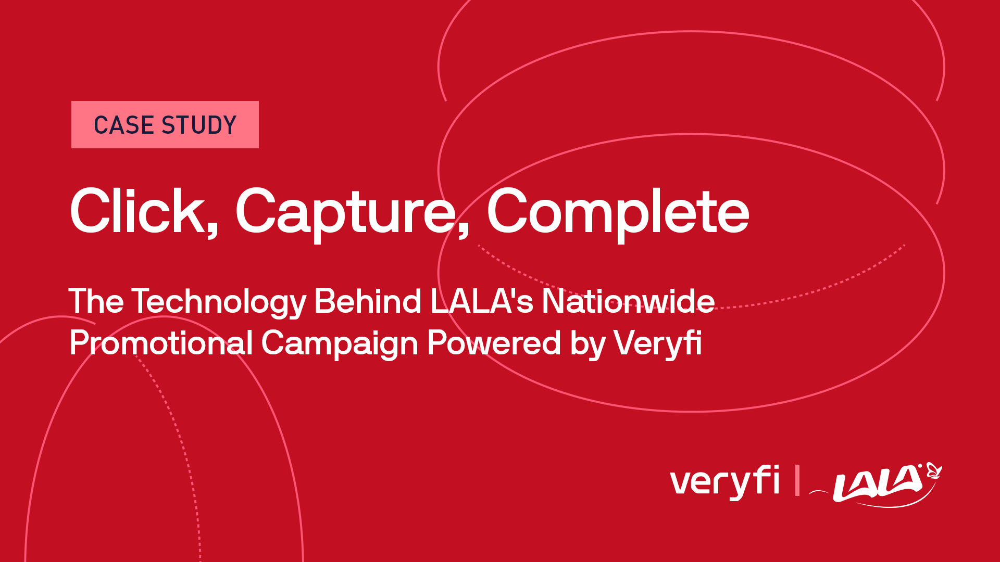

veryfi
about veryfi
veryfi is a YC-backed fintech startup that turns messy receipts and documents into clean, structured data using AI. think of it as the smartest OCR on the planet automating expense management, fraud detection, and data extraction for enterprises who are tired of manual entry.
as the company scaled, they needed marketing that could turn AI tech into stories people actually wanted to read. that's where i came in.
my role
at veryfi, i worked as many different roles: strategist, writer, video producer, motion designer, and occasional internal hype person. i owned everything from "what should we make?" to "here's the final edit, shipping now."
my approach? data first, human second. i'd start with analytics to figure out what people actually cared about, then translate technical lingoes into stories that are easier to digest. every video, case study, and blog post was designed to move someone through the funnel.
tools & software
marketing & analytics:
creative production:
motion graphics & animations
veryfi logo animation: animated brand identity with smooth motion graphics for digital applications.
animated graphics: custom motion design showcasing dynamic visual effects and smooth animations.
(animated) ABM ad: engaging animated ad for linkedin scrollers.
3D scroll animation: interactive 3D visualization showcasing smooth scroll-based animations and depth effects.
product demo videos
blueprint demo: comprehensive walkthrough of veryfi's blueprint, showcasing key features and use cases for enterprise customers.
inboxes demo: detailed exploration of advanced features, demonstrating technical capabilities while maintaining accessibility for business decision makers.
customer case studies

lala whatsapp campaign: documented how lala leveraged veryfi's whatsapp integration for promotional campaigns.
sky airline flight audit automation: documented how sky airline processed 24,000 documents in one month and cleared a year's audit backlog using veryfi adocs + workflow.

pepsico multi channel campaign: highlighted how veryfi's OCR powered pepsico's bottlecaps campaigns in mexico.

shopback receipt rewards: documented how shopback scaled receipt-based rewards in australia with veryfi's real-time fraud detection and instant receipt validation.
technical blog content

cpg promotion fraud prevention: in-depth analysis of fraud prevention strategies in CPG promotions.

AI powered fraud detection: forward looking piece on upstream fraud prevention using AI.

ocr receipt scanner for cpg: detailed guide on implementing receipt scanning technology for consumer goods.

beyond basic OCR: technical exploration of multimodal data extraction capabilities.
social media shorts
impact & results
here's what actually mattered: the videos became veryfi's most watched content and drove a prominent increase in leads. case studies shortened sales cycles because prospects could finally see proof that this stuff works in the real world. blog posts consistently brought in organic traffic and positioned veryfi as the go to expert in fraud prevention and OCR. and those social shorts? they expanded reach to audiences who'd never heard of veryfi before (i scored 3000% increase in engagement within my first month — wohoo).
good content isn't just "nice to have" for B2B, it's a growth engine. you just have to make it actually good.